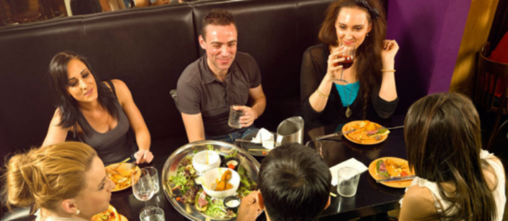
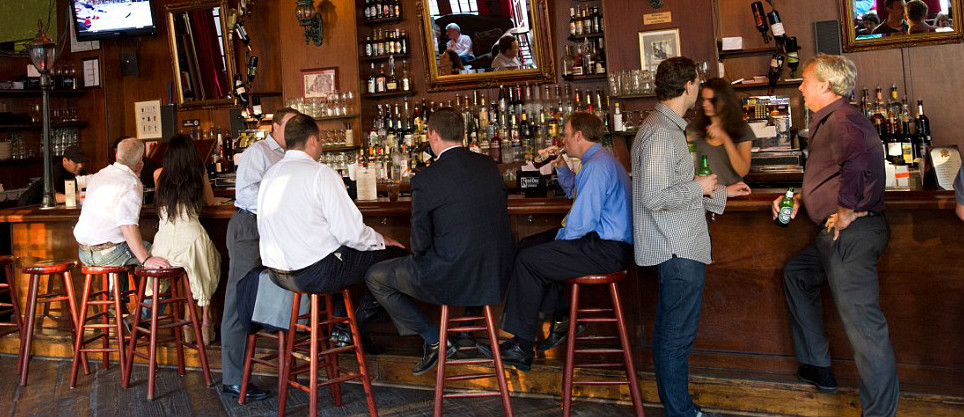

Wash. U. Social Experience
The best places to spend your four years eating and drinking at Washington University in St. Louis
St. Louis has provided a great four years of my life and I would like to share some of my most memorable moments from my four years at Wash. U. I know that the list is lacking currently so please reccommend a new bar or place to eat around St. Louis and we will take this into account and add it into the update website.
This site will direct you with all of your social needs when considering what to do with your free time at Washington University in St. Louis. It involves places available for all ages but also has a drink section as well as a food and drink section that has some more 21+ like activities for the older upperclass of Wash. U. to enjoy.
Over my four years year I have had the opportunity to experience many of the bars and food locations that St. Louis has to offer. The following are lists of my favorite places around St. Louis for any activity from looking for a quick bite to eat to going out with friends for a night of debauchery on the town. Many of the greatest stories that have come out of my college career have occurred at numerous of these locations and these are all spots that all students at Wash. U. should make a conscience effort to attend.
 Recommend a bar
Recommend a bar
Food Around St. Louis
Here you will find all of the frequented food locations from my four years here at Wash. U. This is a list of all of my favorite locations in and around St. Louis when I am looking for anywhere from a quick bite to eat to a full sit down family experience. This page will give you the name of the restaurant the style of food served and the relative location to Wash. U.
| Name | Style | Location |
|---|---|---|
| 801 Chophouse | Steak | Clayton |
| 5 Star Burger | American | Clayton |
| Sushi AI | Sushi | Clayton |
| Sauce on the Side | Calzones | Clayton |
| Noodles and Co. | Fast Italian | Loop |
| Ruth Chris | Steak | Clayton or St. Louis |
| Lorenzo's Trattoria | Italian | The Hill |
| Favazza's | Italian | The Hill |
| Pappy's BBQ | BBQ | St. Louis |
| Imo's Pizza | Pizza | St. Louis |
| Name | Deal | Day | Time |
|---|---|---|---|
| 5 Star Burger | 1/2 prices apps and burgers | Mon-Fri | 4pm - 6pm |
Drinks Around St. Louis
Here you will find all of my favorite places to go for drinks and drinks alone! This portion of the site has all of my favorite places to drink around St. Louis and features a wide variety of options from buckets, to mimosas, to bloody's and finally just your average bar scene where you will receive cocktails and beers.
| Name | Drinks | Location |
|---|---|---|
| Kruegers | Bar | Clayton |
| Howl at the Moon | Buckets Cocktails and Bar | BPV |
| Moonrise | Cocktails and Bar | Loop |
| PBR | Bar | BPV |
| Humphreys | Bar | St. Louis |
| Taylanyas | Bar | Hampton |
| The Library Annex | Bar | St. Louis |
| Three Sixty | Bar | St. Louis |
| Bar Napoli | Bar | Clayton |
| Molly's | Bar | St. Louis |
| Name | Deal | Day | Time |
|---|---|---|---|
| Humphreys | Penny Pitchers | Wednesday | 11pm-12am |
Food and Drinks Around St. Louis

On this page you will find many places that are enjoyable experiences for both drinking and eating and are generally great place to go with large groups or parties of friends before a night out on the town. These locations are all places where you can grab a bite to eat as well as have a few drinks with dinner to get your night started off right.
| Name | Drinks | Food Style | Location |
|---|---|---|---|
| Mi Ranchito | Margaritas | Mexican | Loop |
| Oyster Bar | Bloodys Cocktails and Bar | Cajun Creole | St. Louis |
| Wheel House | Bar | American | St. Louis |
| Three Kings | Bar | American | Loop |
| Mission Taco | Cocktails and Bar | Mexican | Loop |
| Blueberry Hill | Bar | American | Loop |
| Market Pubhouse | Mimosas and Bar | American | Loop |
| Cafe Napoli | Cocktails and Bar | Southern Italian | Clayton |
| Fitz's | Bar | American | Loop |
| Mike Duffy's | Bar | American | Clayton |
| Name | Deal | Day | Time |
|---|---|---|---|
| Mission Taco | $2 Shots and Tacos | Tuesday-Sunday | 10pm - close |